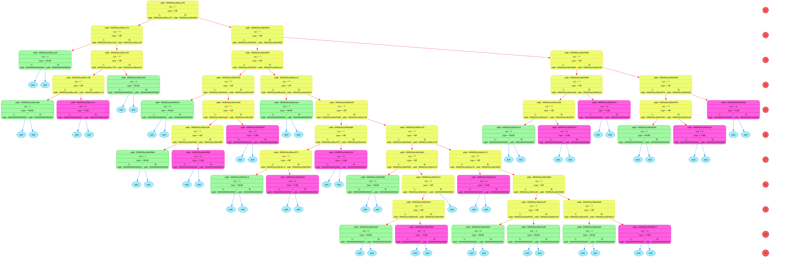
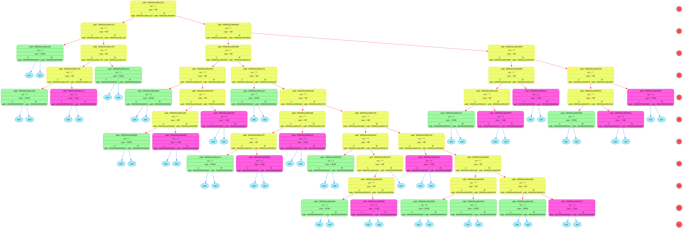

READ_file: addr buffer_adr = 1848283271184
=============================================================================
Symbol = <(>, his addr = 1848283271184
Symbol = <(>, his addr = 1848283271185
Symbol = <3>, his addr = 1848283271186
Symbol = <4>, his addr = 1848283271187
Symbol = <5>, his addr = 1848283271188
Symbol = <)>, his addr = 1848283271189
Symbol = < >, his addr = 1848283271190
Symbol = <+>, his addr = 1848283271191
Symbol = < >, his addr = 1848283271192
Symbol = <(>, his addr = 1848283271193
Symbol = <1>, his addr = 1848283271194
Symbol = <9>, his addr = 1848283271195
Symbol = <)>, his addr = 1848283271196
Symbol = <)>, his addr = 1848283271197
symbol = <\0>, addr = 1848283271198
=============================================================================

 
